ECD SYSTEM > Engine Difficult to Start or Stalling |
| Faults and Symptoms of Common Rail Diesel Components |
Engine Control
| Component | Mass air flow meter | |
| Main fault | Decrease in performance (foreign matter is stuck) | |
| Symptoms | Lack of power, black smoke | |
| Data List | MAF | |
| ||
| Component | Intake system | |
| Symptom: Main fault |
| |
| Data List |
| |
| Component | Turbocharger system | |
| Main fault |
| |
| Symptoms | Lack of power (when vehicle starting, when heavy load) (Black smoke is not emitted when racing while vehicle stopped) | |
| Data List | MAP (inside intake air pressure), Target Booster Pressure
| |
| Diagnostic Point |
| |
| Component | Exhaust system | |
| Main fault | Blockage | |
| Symptoms | Lack of power (high engine speed, when heavy load) | |
| Data List | MAP (inside intake air pressure) When the accelerator is fully depressed, if the MAP is 20 kPa lower than Target Booster Pressure for more than 5 seconds then a lack of power will be felt. | |
| Component | Glow system | |
| Main fault | Open circuit, glow plug relay fault | |
| Symptoms | Difficult to start, rough idle, knocking, white smoke (when cold) | |
| Data List | Check the glow plug indicator light | |
| Diagnostic Point | Try to measure the resistance of the glow plug | |
| Component | Battery | |
| Main fault | Battery is depleted | |
| Symptoms | Difficult to start (cannot crank, crank speed is low), horn is quiet. | |
| Data List | Battery Voltage When cranking, battery voltage is less than 5 V | |
| Component | Engine | |
| Main fault | Damaged, Seized up | |
| Symptoms | Cannot crank, crank speed is low, strange noise | |
| Component | Engine | |
| Main fault | Loss of compression | |
| Symptoms | Rough idle (lack of power always) | |
| Data List | Engine Speed of Cyl
| |
| Component | Entry and Start system | |
| Main fault | Starter system malfunction | |
| Symptoms | Difficult to start | |
| Data List | Starter Signal
| |
| Component | Engine immobiliser system | |
| Main fault | Engine immobiliser system/Problem Symptoms Table (Click here) | |
| Symptoms | Engine does not start | |
| Data List | Immobiliser Communication
| |
Diesel Injection
| Component | Fuel supply pump | |
| Main fault | - | |
| Symptoms | Difficult to start, engine stalling, rough idle, lack of power | |
| Data List | Fuel Press, Target Common Rail Pressure, Target Pump SCV Current
| |
| Diagnostic Trouble Code | Even if Fuel Press is less than Target Common Rail Pressure, a DTC will not be stored. | |
| Component | Fuel filter | |
| Main fault | Blockage | |
| Symptoms | Difficult to start, engine stalling, rough idle, lack of power | |
| Data List | Fuel Press, Target Common Rail Pressure
| |
| Diagnostic Trouble Code | Even if Fuel Press is less than Target Common Rail Pressure, a DTC will not be stored. | |
| Component | Fuel injector | |
| Main fault | Blockage | |
| Symptoms | Rough idle, lack of power, black smoke, white smoke, knocking | |
| Data List | Injection Feedback Val
| |
| Component | Pressure limiter | |
| Main fault | Does not completely close | |
| Symptoms | Difficult to start, engine stall, rough idle, lack of power | |
| Component | Injector Driver (EDU) | |
| Main fault | Circuit fault: The fuel injector does not open. | |
| Symptoms | Difficult to start, rough idle, lack of power, black smoke, white smoke, knocking | |
| Data List | Same as fuel injector | |
| Diagnostic Trouble Code | When the EDU has a fault, some DTCs may be stored. | |
| Component | Fuel pressure sensor | |
| Main fault | Open circuit, Decrease in performance (foreign matters is stuck) | |
| Symptoms | Difficult to start, rough idle, engine stall, lack of power | |
| Data List | Fuel Press, Target Common Rail Pressure
| |
| Diagnostic Trouble Code | When the fuel pressure sensor has a fault, some DTCs may be stored. | |
| Component | Irregular fuel | |
| Main fault | - | |
| Symptoms | Difficult to start, rough idle (especially when cold) | |
Diesel EGR
| Component | EGR system | |
| Main fault |
| |
| Symptoms |
| |
| Data List | Actual EGR Valve Pos., Target EGR Pos.
| |
Diesel Throttle
| Component | Diesel throttle system | |
| Main fault | Stuck, does not move smoothly | |
| Symptoms |
| |
| Data List |
| |
| Data List Related to Starting Trouble |
Engine Control
| Data List | Judgment of Data List Values | Faulty Component | Diagnosis Note |
| MAP |
| When MAP is low, the following conditions are possible:
|
|
Results of real-vehicle check:
| |||
| Data List | Judgment of Data List Values | Faulty Component | Diagnosis Note |
| MAF | - |
|
|
| Results of real-vehicle check: w/ EGR
| |||
| |||
| Data List | Judgment of Data List Values | Faulty Component | Diagnosis Note |
| Intake Air | - | Intake air temperature sensor. |
|
| - | |||
| Data List | Judgment of Data List Values | Faulty Component | Diagnosis Note |
| Coolant Temp |
| Engine coolant temperature sensor |
|
| - | |||
| Data List | Judgment of Data List Values | Faulty Component | Diagnosis Note |
| Battery Voltage | When cranking, in cases when Battery Voltage becomes less than 5 V, the battery is depleted. | Battery | If 11 V or less, characteristics of some electrical components change. |
Results of real-vehicle check:
| |||
| Data List | Judgment of Data List Values | Faulty Component | Diagnosis Note |
| Starter Signal | Operation of engine switch (STA) ON: Starter is operating OFF: Starter is not operating | Entry and Start system |
|
| - | |||
| Data List | Judgment of Data List Values | Faulty Component | Diagnosis Note |
| Engine Speed of Cyl #1 (to #8) | When cranking, the engine speed of each cylinder is the same under normal conditions. When a cylinder is approximately 100 rpm higher than the other cylinders, it is conceivable that the compression of that cylinder is being lost.
| - |
|
| - | |||
| Data List | Judgment of Data List Values | Faulty Component | Diagnosis Note |
| Immobiliser Communication | Engine immobiliser system/Data List (Click here) | Engine immobiliser system/Problem Symptoms Table (Click here) | When there is a malfunction in the immobiliser system, a DTC is stored (Click here) |
| - | |||
Diesel Injection
| Data List | Judgment of Data List Values | Faulty Component | Diagnosis Note |
| Target Common Rail Pressure | - | - |
|
Results of real-vehicle check:
| |||
| Data List | Judgment of Data List Values | Faulty Component | Diagnosis Note |
| Fuel Press |
|
|
|
Results of real-vehicle check:
| |||
| Data List | Judgment of Data List Values | Faulty Component | Diagnosis Note |
| Target Pump SCV Current | Idling after warming up, roughly 923 to 1123 mA. When this value is large, the pump is trying to increase the fuel discharge rate. |
|
|
Results of real-vehicle check:
| |||
| Data List | Judgment of Data List Values | Faulty Component | Diagnosis Note |
| Injection Feedback Val #1 (to #8) |
|
|
|
| - | |||
| Data List | Judgment of Data List Values | Faulty Component | Diagnosis Note |
| Injection Volume | - | - | After warming up the engine, when Injection Volume during idling is 10 mm3/st or more, there is tendency for the injector to clog. |
Results of real-vehicle check:
| |||
Diesel Throttle
| Data List | Judgment of Data List Values | Faulty Component | Diagnosis Note |
| Actual Throttle Position Actual Throttle Position #2 |
| Diesel throttle body | Actual Throttle Position is the closing percentage of the throttle valve.
|
Results of real-vehicle check:
| |||
| Data List | Judgment of Data List Values | Faulty Component | Diagnosis Note |
| Throttle Motor Duty #1 Throttle Motor Duty #2 |
| - |
|
Results of real-vehicle check:
| |||
Diesel EGR
| Data List | Judgment of Data List Values | Faulty Component | Diagnosis Note |
| Target EGR Valve Pos. Target EGR Valve Pos. #2 | - | - |
|
Results of real-vehicle check:
| |||
| Data List | Judgment of Data List Values | Faulty Component | Diagnosis Note |
| Actual EGR Valve Pos. Actual EGR Valve Pos. #2 |
| EGR valve assembly |
|
Results of real-vehicle check:
| |||
| Data List | Judgment of Data List Values | Faulty Component | Diagnosis Note |
| EGR Close Lrn. Status |
| - | After disconnecting and reconnecting the battery cable, if the engine switch has not been turned off once, learning may not be completed. |
| - | |||
| Data List | Judgment of Data List Values | Faulty Component | Diagnosis Note |
| EGR Close Lrn. Val. | Leave the vehicle idling, with the EGR Close Lrn. Status OK, the normal range of EGR Close Lrn. Val. is within 3.5 to 4.5 V. In cases when EGR Close Lrn. Status is NG or EGR Close Lrn. Val. is at the maximum or minimum (3.5 to 4.5 V) of normal range, it is possible that the EGR valve is not completely closed or a foreign object is lodged in the EGR valve seat area. | - |
|
| - | |||
| Actual Examples of Malfunction |
Fuel is not being supplied to supply pump (Low pressure fuel line clogged)
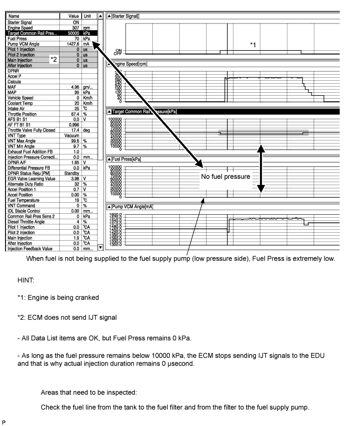
Fuel is not being injected (Injectors are leaking)
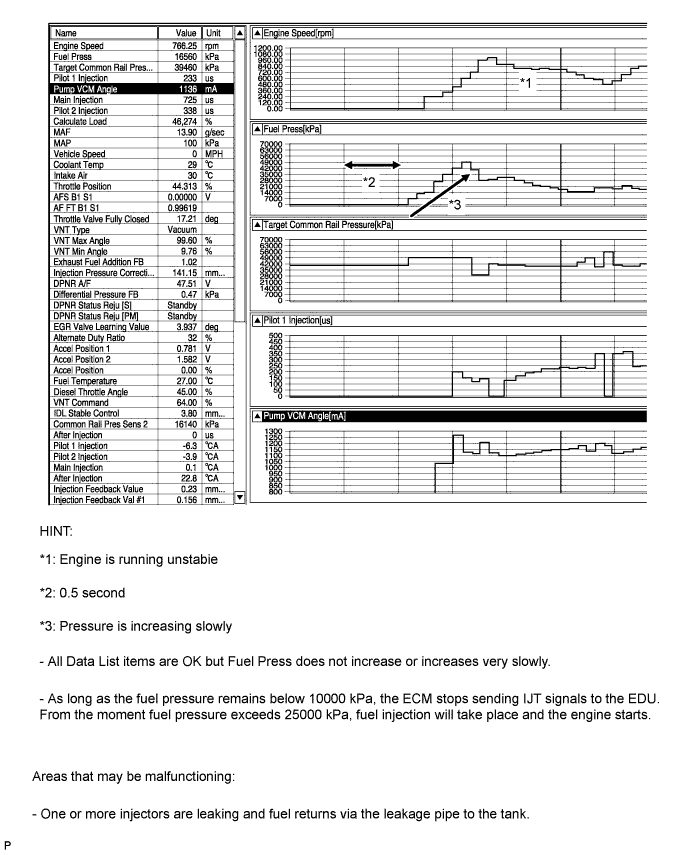
Fuel is not being injected (EDU circuit malfunction)
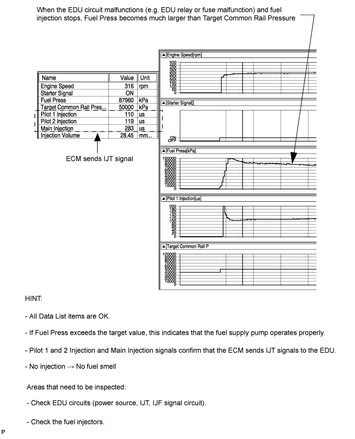
Fuel supply pump malfunction (Suction control valve momentary sticking)
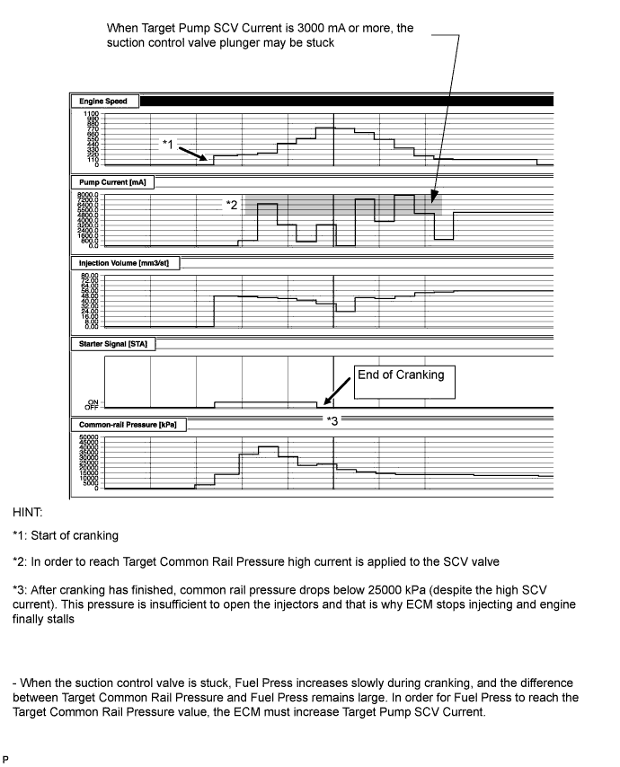
Increased opening delay of injectors (Internal contamination)
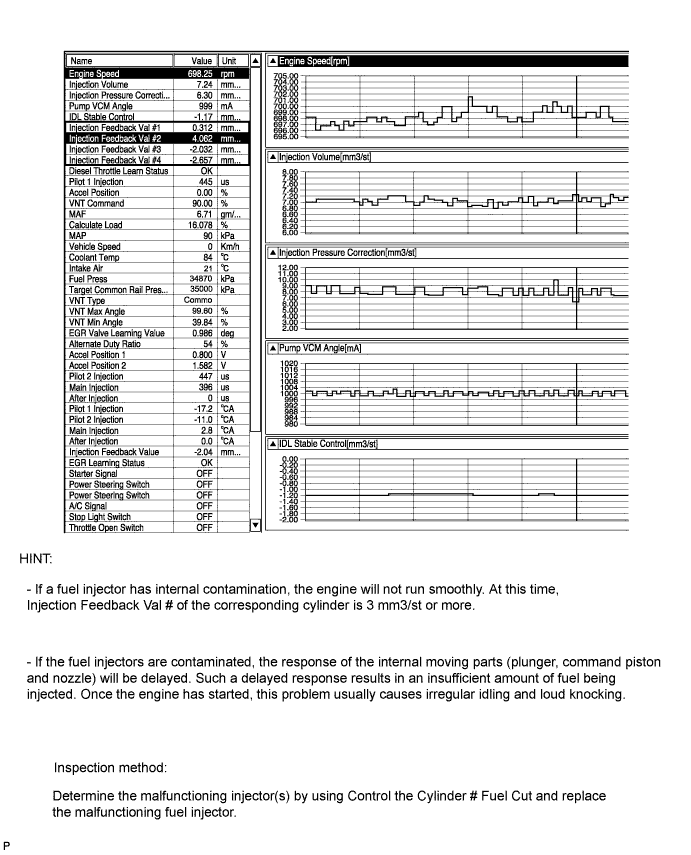
| Explanation of Symptom |
| Starting Trouble | For good starting it is essential to have:
With problems such as a depleted battery, the crankshaft speed can become low, or if the engine compression is leaking, the compression pressure will not rise and there will be difficulty starting. When the engine is cold, even if there is compression heat, it will escape from the combustion chamber. For this reason, when the engine is started when it is cold, the glow plugs heat the compressed air. Also after starting the engine, by charging the glow plugs for a fixed time set according to the engine coolant temperature, diesel knocking and white smoke are prevented. The quantity of fuel injected is determined by the fuel pressure and also the amount of time the fuel injector is open. |
| Trouble Area Chart According to Problem Cause |
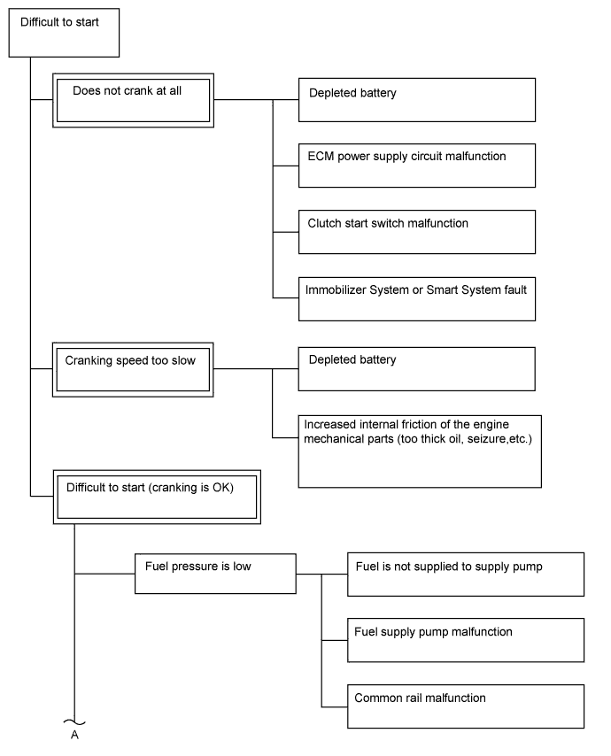
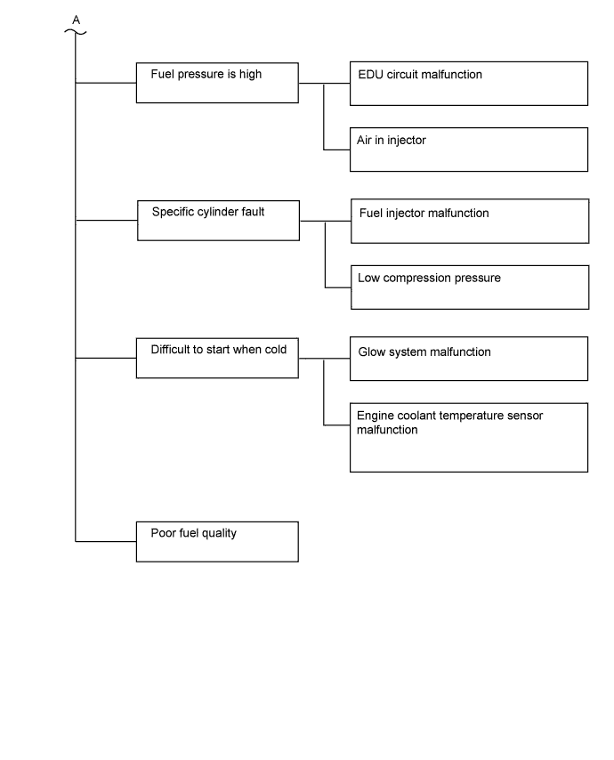
| 1.CHECK ENGINE CRANKING CONDITION |
Check the engine cranking condition.
| Result | Proceed to |
| Does not crank at all. | A |
Low cranking speed.
| B |
| Cranking is OK. | C |
|
| ||||
|
| ||||
| A | |
| 2.CHECK BATTERY CONDITION |
Check battery condition (Click here).
|
| ||||
| OK | |
| 3.CHECK COMMUNICATION BETWEEN INTELLIGENT TESTER AND ECM |
Connect the intelligent tester to the DLC3.
Turn the engine switch on (IG) and turn the tester on.
Check if the normal starting screen appears (check whether communication with the ECM is possible).
|
| ||||
| OK | |
| 4.READ VALUE USING INTELLIGENT TESTER (CLUTCH SWITCH) |
Connect the intelligent tester to the DLC3.
Turn the engine switch on (IG) and turn the tester on.
Enter the following menus: Powertrain / Engine / Data List / All Data / Clutch Switch.
Read the value displayed on the tester.
| Tester Display | Condition | Specified Condition |
| Clutch Switch | Clutch pedal depressed | ON |
| Result | Proceed to |
| OK | A |
| NG (for LHD) | B |
| NG (for RHD) | C |
|
| ||||
|
| ||||
| A | |
| 5.READ ALL OUTPUT DTCS |
Connect the intelligent tester to the DLC3.
Turn the engine switch on (IG) and turn the tester on.
Enter the following menus: Utility / All Codes.
| Result | Proceed to |
| No DTC is output | A |
| DTCs related to engine are output | B |
|
| ||||
| A | |
| 6.INSPECT SMART START SYSTEM (IN CASE OF VEHICLES EQUIPPED WITH SMART ENTRY AND START SYSTEM) |
| NEXT | |
| 7.INSPECT CRANKING HOLDING FUNCTION CIRCUIT |
Inspect the cranking holding function circuit (Click here).
| NEXT | ||
| ||
| 8.CHECK INITIALIZATION (FUEL SUPPLY PUMP) |
| NEXT | |
| 9.READ OUTPUT DTC (RELATED TO ENGINE) |
Connect the intelligent tester to the DLC3.
Turn the engine switch on (IG) and turn the tester on.
Enter the following menus: Powertrain / Engine / DTC.
Read the DTCs.
| Result | Proceed to |
| No DTC is output | A |
| DTCs related to engine are output | B |
|
| ||||
| A | |
| 10.TAKE DATA LIST DURING STARTING AND IDLING |
 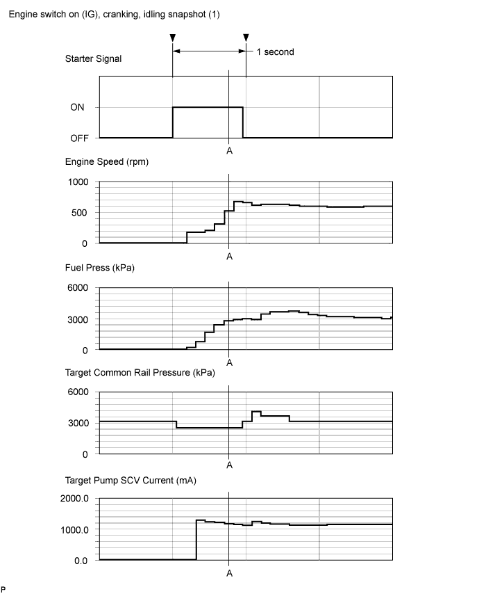 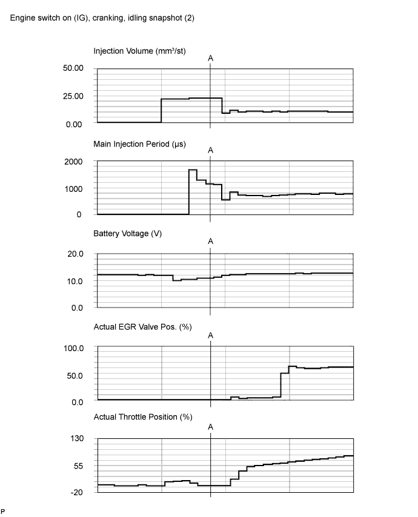 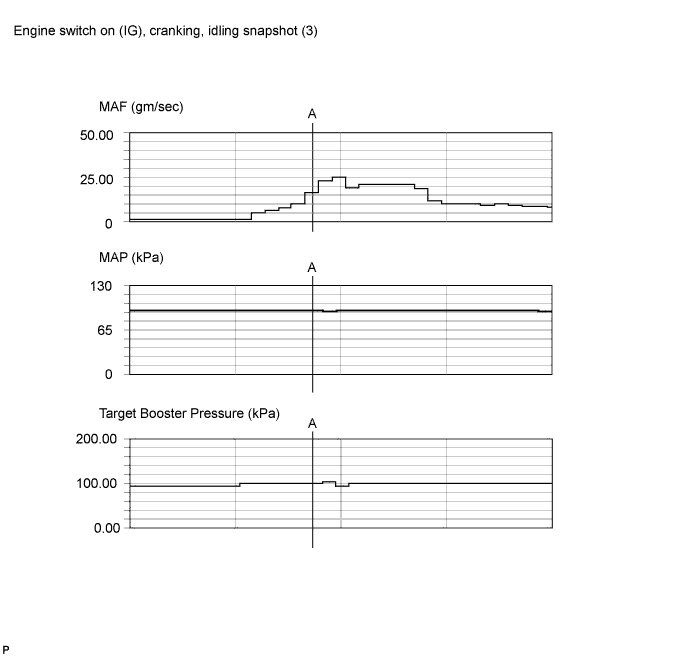 |
Connect the intelligent tester to the DLC3.
Turn the engine switch on (IG) and turn the tester on.
Enter the following menus: Powertrain / Engine / Data List / All Data.
Take a snapshot of the following Data Lists with the intelligent tester during "Engine switch on (IG) (5 seconds) → Starting → Idling (10 seconds)".
| Data List | |
| Starter Signal | |
| Engine Speed | |
| Fuel Press | |
| Target Common Rail Pressure | |
| Target Pump SCV Current | |
| Injection Volume | |
| Main Injection Period | |
| Inj. FB Vol. for Idle | |
| Injection Feedback Val #1 | |
| Injection Feedback Val #2 | |
| Injection Feedback Val #3 | |
| Injection Feedback Val #4 | |
| Injection Feedback Val #5 | |
| Injection Feedback Val #6 | |
| Injection Feedback Val #7 | |
| Injection Feedback Val #8 | |
| Battery Voltage | |
| Actual EGR Valve Pos. Actual EGR Valve Pos. #2 | |
| Target EGR Pos Target EGR Pos. #2 | |
| Actual Throttle Position Actual Throttle Position #2 | |
| MAF | |
| Target Booster Pressure | |
| MAP |
| Data List | Value | Unit |
| Starter Signal | ON | - |
| Engine Speed | 524 | rpm |
| Fuel Press | 27820 | kPa |
| Target Common Rail Pressure | 25000 | kPa |
| Injection Volume | 22.71 | μs |
| Main Injection Period | 1142 | μs |
| Inj. FB Vol. for Idle | -1.33 | mm3/st |
| Battery Voltage | 11.0 | V |
| Target EGR Pos. Target EGR Pos. #2 | 0 | % |
| Actual EGR Valve Pos. Actual EGR Valve Pos. #2 | 0.0 | % |
| Actual Throttle Position Actual Throttle Position #2 | -1 | % |
| MAF | 16.45 | g/sec |
| MAP | 99 | kPa |
| Target Boost Pressure | 100.91 | kPa |
| Coolant Temp | 40 | °C |
| Data List | Value | Unit |
| Engine Speed | 599 | rpm |
| Target Booster Pressure | 99.23 | kPa |
| MAP | 97 | kPa |
| MAF | 8.39 | g/sec |
| Target Common Rail Pressure | 32000 | kPa |
| Fuel Press | 32100 | kPa |
| Injection Volume | 6.13 | mm3/st |
| Actual EGR Valve Pos. Actual EGR Valve Pos. #2 | 43.5 | % |
| Actual Throttle Position Actual Throttle Position #2 | 84 | % |
| Injection Feedback Val #1 | 0.0 | mm3/st |
| Injection Feedback Val #2 | 0.3 | mm3/st |
| Injection Feedback Val #3 | 0.0 | mm3/st |
| Injection Feedback Val #4 | -0.4 | mm3/st |
| Injection Feedback Val #5 | -0.4 | mm3/st |
| Injection Feedback Val #6 | 0.3 | mm3/st |
| Injection Feedback Val #7 | 0.0 | mm3/st |
| Injection Feedback Val #8 | -0.5 | mm3/st |
| Target EGR Pos. Target EGR Pos. #2 | 43.5 | % |
| Coolant Temp | 78 | °C |
| NEXT | |
| 11.CHECK SNAPSHOT (FUEL PRESS, TARGET COMMON RAIL PRESSURE ETC.) |
Check Fuel Press and Target Common Rail Pressure in the snapshot taken when the engine was starting.
| Result | Proceed to |
2 seconds after Starter Signal turns from OFF to ON, Fuel Press is less than "Target Common Rail Pressure -5000 kPa"
| A |
| 2 seconds after Starter Signal turns from OFF to ON, Fuel Press is 5000 kPa or more higher than Target Common Rail Pressure | B |
| 2 seconds after Starter Signal turns from OFF to ON, Fuel Press is within +/-5000 kPa of Target Common Rail Pressure | C |
|
| ||||
|
| ||||
| A | |
| 12.BLEED AIR FROM FUEL SYSTEM |
 |
Using the hand pump as indicated by the arrow in the illustration, bleed air from the fuel system. Continue pumping until pumping becomes difficult.
| NEXT | |
| 13.CHECK IF FUEL IS BEING SUPPLIED TO FUEL SUPPLY PUMP |
Disconnect the inlet hose from the fuel supply pump.
Operate the priming pump and check that fuel is being supplied to the fuel supply pump.
|
| ||||
| OK | |
| 14.CONFIRM WHETHER MALFUNCTION HAS BEEN SUCCESSFULLY REPAIRED |
Check whether the difficulty starting has been successfully repaired by starting the engine.
|
| ||||
| OK | ||
| ||
| 15.CHECK FUEL LEAK (FUEL SUPPLY PUMP) |
Connect the intelligent tester to the DLC3.
Turn the engine switch on (IG) and turn the tester ON.
Enter the following menus: Powertrain / Engine / Data List / Fuel Press.
Pinch the supply pump return hose and check that Fuel Press during cranking increases.

| Result | Proceed to |
| Fuel Press increases | A |
| No change | B |
|
| ||||
| B | |
| 16.CHECK FUEL LEAK (PRESSURE LIMITER (COMMON RAIL (for Bank 2)) |
Connect the intelligent tester to the DLC3.
Turn the engine switch on (IG) and turn the tester ON.
Enter the following menus: Powertrain / Engine / Data List / Fuel Press.
Pinch the pressure limiter return hose and check that Fuel Press during cranking increases.
| Result | Proceed to |
| Fuel Press increases | A |
| No change | B |
|
| ||||
| B | |
| 17.REPLACE FUEL SUPPLY PUMP |
Replace fuel supply pump (Click here).
| NEXT | |
| 18.CONFIRM WHETHER MALFUNCTION HAS BEEN SUCCESSFULLY REPAIRED |
Check whether the difficulty starting has been successfully repaired by starting the engine.
| NEXT | ||
| ||
| 19.CHECK SNAPSHOT (TARGET PUMP SCV CURRENT) |
Check Target Pump SCV Current in the snapshot taken when the engine was starting.
| Result | Proceed to |
| Target Pump SCV Current is 3000 mA or more | A |
| Target Pump SCV Current is less than 3000 mA | B |
|
| ||||
| B | |
| 20.CHECK DATA LIST |
Check Injection Feedback Val # and Injection Volume in the snapshot taken when the engine was idling.
| Result | Proceed to |
Injection Feedback Val #1 to #8 is outside the range of +/-3 mm3/st
| A |
| Injection Feedback Val #1 to #8 is within the range of +/-3 mm3/st and Injection Volume is more than 10 mm3/st | B* |
| Injection Feedback Val #1 to #8 is within the range +/-3 mm3/st and Injection Volume is 10 mm3/st or less | C |
|
| ||||
|
| ||||
| A | |
| 21.PERFORM ACTIVE TEST USING INTELLIGENT TESTER |
Connect the intelligent tester to the DLC3.
Start the engine and turn the tester on.
Enter the following menus: Powertrain / Engine / Active Test / Control the Cylinder #1 to #8 Fuel Cut.
| NEXT | |
| 22.PERFORM ACTIVE TEST USING INTELLIGENT TESTER |
Connect the intelligent tester to the DLC3.
Turn the engine switch on (IG) and turn the tester on.
Enter the following menus: Powertrain / Engine / Active Test / Check the Cylinder Compression / Data List / Compression / Engine Speed of Cyl #1 to #8.
Check the engine speed during the Active Test.
|
| ||||
|
| ||||
| 23.CHECK CYLINDER COMPRESSION PRESSURE OF MALFUNCTIONING CYLINDER |
Check the cylinder compression pressure (Click here).
|
| ||||
| OK | |
| 24.REPLACE FUEL INJECTOR OF MALFUNCTIONING CYLINDER |
| NEXT | ||
| ||
| 25.CHECK TEMPERATURE WHEN STARTING TROUBLE OCCURS |
Check the temperature when starting trouble occurs.
| Result | Proceed to |
| Difficult to start only for cold engine. | A |
| Difficult to start both for cold and warmed up engine. | B |
|
| ||||
| A | |
| 26.INSPECT ENGINE COOLANT TEMPERATURE SENSOR |
Inspect the engine coolant temperature sensor (Click here).
|
| ||||
| OK | |
| 27.INSPECT GLOW PLUG ASSEMBLY (RESISTANCE) |
 |
Disconnect the glow plug connector.
Measure the resistance according to the value(s) in the table below.
| Tester Connection | Condition | Specified Condition |
| Glow plug terminal - Body ground | 20°C (68°F) | Approximately 1 Ω |
|
| ||||
| OK | |
| 28.INSPECT INJECTOR COMPENSATION CODE |
Read the injector compensation code (Click here).
|
| ||||
| OK | |
| 29.CHECK FUEL QUALITY |
Check that fuel with cetane number is used.
| NEXT | |
| 30.CONFIRM WHETHER MALFUNCTION HAS BEEN SUCCESSFULLY REPAIRED |
Check whether the difficulty starting has been successfully repaired by starting the engine.
| NEXT | ||
| ||
| 31.CHECK SNAPSHOT |
| NEXT | |
| 32.INSPECT INJECTOR DRIVER (EDU POWER SOURCE) |
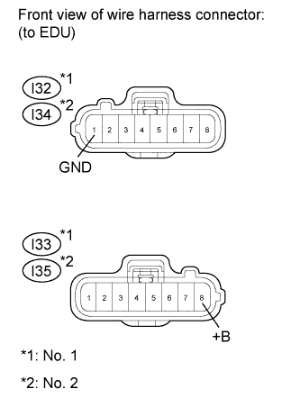 |
Disconnect the I32 and I33 No. 1 injector driver (EDU) connectors.
Disconnect the I34 and I35 No. 2 injector driver (EDU) connectors.
Measure the voltage according to the value(s) in the table below.
| Tester Connection | Switch Condition | Specified Condition |
| I33-8 (+B) - I32-1 (GND) | Engine switch on (IG) | 11 to 14 V |
| Tester Connection | Switch Condition | Specified Condition |
| I35-8 (+B) - I34-1 (GND) | Engine switch on (IG) | 11 to 14 V |
|
| ||||
| OK | |
| 33.INSPECT FUEL INJECTOR |
| NEXT | ||
| ||